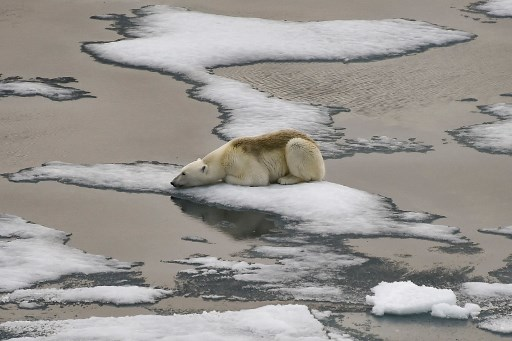

CALENTAMIENTO GLOBAL
El planeta se está volviendo cada vez más caliente, a un ritmo mucho más rápido del que tuvo en épocas pasadas, y el lógico responsable de ello es el ser humano. La mayoría de las actividades industriales, desde la ganadería hasta la quema de combustibles fósiles, inundan la atmósfera con derivados del carbono que no sólo empobrecen la calidad del aire, sino que permanecen en la atmósfera impidiendo la normal liberación del calor, y generando así un efecto invernadero que está ya derritiendo las nieves perpetuas de los polos y aumentando el nivel de las aguas.
